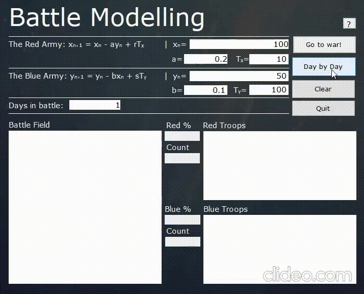

battle model
summary
This is a Battle Modelling program that simulates a battle with simulations by the day. It is done by having two equations that represent the first order differential equation of the armies (Lanchester Equations).
xn+1 = xn - ayn + rTx
yn+1 = yn - bxn + sTy
The program then uses an analytical method to solve for the general equations. This allows for us to calculate the number of soldiers by inputting the armies inital strengths. The xₙ and yₙ quantities are the initial amount of troops for each respective army. The a and b variables are the armies rate of attack and should range from 0 to 1. The Tₓ and Tᵧ variables give the number of redeployments per day.
how it works
The program works by inputting the initial number of troops into the xₙ and yₙ boxes. You then choose your rate of attack for each army and write them into boxes a and b. Enter in the amount of redeployments for each army via the Tₓ and Tᵧ boxes. If you wish to simulate the total war, enter in the total number of days you wish to simulate and click "Go to War!". If you wish to view the war at a tactical day by day viewing, then enter in 1 into the days to simulate and click the "Day by Day" button each time you want to simulate another day.
example
Here is a quick example of a battle being simulated. The thought behind the example is that the Red army is attacking the Blue army who is deceptively small. There replenishments is indictative that they were ready to fight and accommodate at such. The Red army however manages to survive and win around the 50 day mark.
